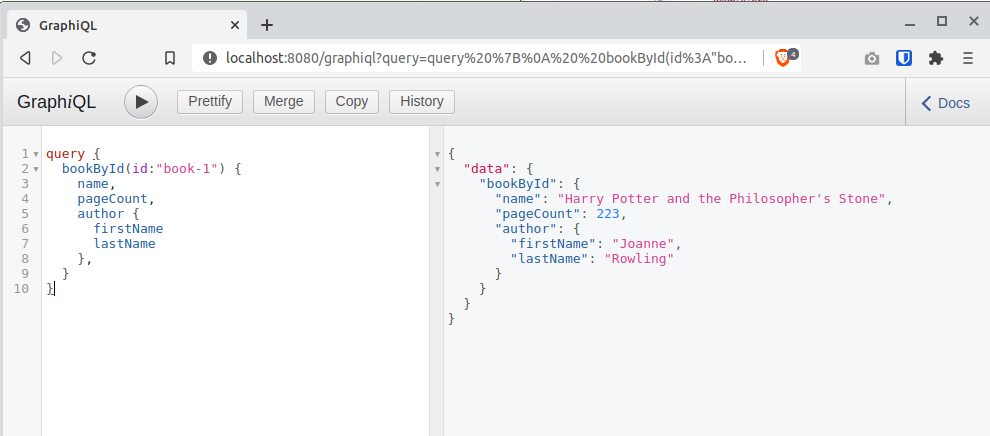

mn create-app example.micronaut.micronautguide --build=gradle --lang=javaTable of Contents
Micronaut GraphQL
Learn how to use Micronaut GraphQL.
Authors: Iván López
Micronaut Version: 4.9.1
1. Getting Started
In this guide, we will create a Micronaut application written in Java that uses GraphQL to expose some data.
GraphQL is a query language for APIs and a runtime for fulfilling those queries with your existing data. GraphQL provides a complete and understandable description of the data in your API, gives clients the power to ask for exactly what they need and nothing more, makes it easier to evolve APIs over time, and enables powerful developer tools.
2. What you will need
To complete this guide, you will need the following:
-
Some time on your hands
-
A decent text editor or IDE (e.g. IntelliJ IDEA)
-
JDK 21 or greater installed with
JAVA_HOMEconfigured appropriately
3. Solution
We recommend that you follow the instructions in the next sections and create the application step by step. However, you can go right to the completed example.
-
Download and unzip the source
4. Writing the Application
Create an application using the Micronaut Command Line Interface or with Micronaut Launch.
If you don’t specify the --build argument, Gradle with the Kotlin DSL is used as the build tool. If you don’t specify the --lang argument, Java is used as the language.If you don’t specify the --test argument, JUnit is used for Java and Kotlin, and Spock is used for Groovy.
|
The previous command creates a Micronaut application with the default package example.micronaut in a directory named micronautguide.
5. GraphQL
Add the following dependency:
build.gradle
implementation("io.micronaut.graphql:micronaut-graphql")By default GraphQL endpoint /graphql is enabled so you don’t need to add any extra configuration.
5.1. Describe your schema
Create the file schema.graphqls in src/main/resources directory:
src/main/resources/schema.graphqls
type Query {
bookById(id: ID): Book (1)
}
type Book { (2)
id: ID
name: String
pageCount: Int
author: Author
}
type Author { (3)
id: ID
firstName: String
lastName: String
}| 1 | Declare a bookById query |
| 2 | Declare a Book type |
| 3 | Declare an Author type |
5.2. Configure Jackson
For Jackson serialization with GraphQL it’s necessary to add the following configuration:
src/main/resources/application.properties
jackson.serialization-inclusion=ALWAYSThis prevents Jackson from removing null or empty values from the response. These are often required by GraphQL clients.
5.3. Book and Author classes
Create Book and Author classes that will mimic the data we want to expose:
src/main/java/example/micronaut/Book.java
package example.micronaut;
import io.micronaut.core.annotation.Introspected;
@Introspected
public class Book {
private final String id;
private final String name;
private final int pageCount;
private final Author author;
public Book(String id, String name, int pageCount, Author author) {
this.id = id;
this.name = name;
this.pageCount = pageCount;
this.author = author;
}
public String getId() {
return id;
}
public String getName() {
return name;
}
public int getPageCount() {
return pageCount;
}
public Author getAuthor() {
return author;
}
}src/main/java/example/micronaut/Author.java
package example.micronaut;
import io.micronaut.core.annotation.Introspected;
@Introspected
public class Author {
private final String id;
private final String firstName;
private final String lastName;
public Author(String id, String firstName, String lastName) {
this.id = id;
this.firstName = firstName;
this.lastName = lastName;
}
public String getId() {
return id;
}
public String getFirstName() {
return firstName;
}
public String getLastName() {
return lastName;
}
}5.4. Data repository
To keep this example simple, instead of retrieving the information from a database we will keep it in memory and just return it from there. In a real-world example you will use any external storage: relational database, SQL database, etc.
Create DbRepository
src/main/java/example/micronaut/DbRepository.java
package example.micronaut;
import jakarta.inject.Singleton;
import java.util.Arrays;
import java.util.List;
import java.util.stream.Collectors;
@Singleton
public class DbRepository {
private static final List<Book> books = Arrays.asList( (1)
new Book("book-1", "Harry Potter and the Philosopher's Stone", 223, new Author("author-1", "Joanne", "Rowling")),
new Book("book-2", "Moby Dick", 635, new Author("author-2", "Herman", "Melville")),
new Book("book-3", "Interview with the vampire", 371, new Author("author-3", "Anne", "Rice"))
);
List<Book> findAllBooks() {
return books;
}
List<Author> findAllAuthors() {
return books.stream()
.map(Book::getAuthor)
.collect(Collectors.toList());
}
}| 1 | These are the only books we have in our system. |
5.5. Data Fetchers
With a Data Fetcher we bind the GraphQL schema, and our domain model and execute the appropriate queries in our datastore to retrieve the requested data.
Create class GraphQLDataFetchers
src/main/java/example/micronaut/GraphQLDataFetchers.java
package example.micronaut;
import graphql.schema.DataFetcher;
import jakarta.inject.Singleton;
@Singleton
public class GraphQLDataFetchers {
private final DbRepository dbRepository;
public GraphQLDataFetchers(DbRepository dbRepository) { (1)
this.dbRepository = dbRepository;
}
public DataFetcher<Book> getBookByIdDataFetcher() {
return dataFetchingEnvironment -> { (2)
String bookId = dataFetchingEnvironment.getArgument("id"); (3)
return dbRepository.findAllBooks() (4)
.stream()
.filter(book -> book.getId().equals(bookId))
.findFirst()
.orElse(null);
};
}
public DataFetcher<Author> getAuthorDataFetcher() {
return dataFetchingEnvironment -> {
Book book = dataFetchingEnvironment.getSource(); (5)
Author authorBook = book.getAuthor(); (6)
return dbRepository.findAllAuthors() (7)
.stream()
.filter(author -> author.getId().equals(authorBook.getId()))
.findFirst()
.orElse(null);
};
}
}| 1 | Constructor injection for the DbRepository bean |
| 2 | Return a GraphQL dataFetchingEnvironment with the information about the query |
| 3 | Get the id parameter from the query |
| 4 | Access the repository to find the book. Remember that this should be backed by a real datastore |
| 5 | Get the Book related to a specific author |
| 6 | Get the Author |
| 7 | Access the repository to find the Author. |
5.6. Factory
Create the following factory that will bind the GraphQL schema to the code and types.
src/main/java/example/micronaut/GraphQLFactory.java
package example.micronaut;
import graphql.GraphQL;
import graphql.schema.GraphQLSchema;
import graphql.schema.idl.RuntimeWiring;
import graphql.schema.idl.SchemaGenerator;
import graphql.schema.idl.SchemaParser;
import graphql.schema.idl.TypeDefinitionRegistry;
import io.micronaut.context.annotation.Bean;
import io.micronaut.context.annotation.Factory;
import io.micronaut.core.io.ResourceResolver;
import org.slf4j.Logger;
import org.slf4j.LoggerFactory;
import jakarta.inject.Singleton;
import java.io.BufferedReader;
import java.io.InputStream;
import java.io.InputStreamReader;
import java.util.Optional;
import static graphql.schema.idl.TypeRuntimeWiring.newTypeWiring;
@Factory (1)
public class GraphQLFactory {
private static final Logger LOG = LoggerFactory.getLogger(GraphQLFactory.class);
@Bean
@Singleton
public GraphQL graphQL(ResourceResolver resourceResolver,
GraphQLDataFetchers graphQLDataFetchers) {
SchemaParser schemaParser = new SchemaParser(); (2)
TypeDefinitionRegistry typeRegistry = new TypeDefinitionRegistry();
Optional<InputStream> graphqlSchema = resourceResolver.getResourceAsStream("classpath:schema.graphqls"); (3)
if (graphqlSchema.isPresent()) {
typeRegistry.merge(schemaParser.parse(new BufferedReader(new InputStreamReader(graphqlSchema.get())))); (4)
RuntimeWiring runtimeWiring = RuntimeWiring.newRuntimeWiring() (5)
.type(newTypeWiring("Query")
.dataFetcher("bookById", graphQLDataFetchers.getBookByIdDataFetcher())) (6)
.type(newTypeWiring("Book")
.dataFetcher("author", graphQLDataFetchers.getAuthorDataFetcher())) (7)
.build();
SchemaGenerator schemaGenerator = new SchemaGenerator();
GraphQLSchema graphQLSchema = schemaGenerator.makeExecutableSchema(typeRegistry, runtimeWiring); (8)
return GraphQL.newGraphQL(graphQLSchema).build(); (9)
} else {
LOG.debug("No GraphQL services found, returning empty schema");
return new GraphQL.Builder(GraphQLSchema.newSchema().build()).build();
}
}
}| 1 | Annotate the class with @Factory so the Micronaut framework knows that this class will create beans |
| 2 | Create a new SchemaParser |
| 3 | Get the previously created schema.graphqls file from the classpath |
| 4 | Parse the schema |
| 5 | Create the runtime wiring |
| 6 | Bind a data fetcher for the bookById query |
| 7 | Bind a data fetcher to retrieve the author related to a book |
| 8 | Create the executable schema |
| 9 | Return the GraphQL bean |
6. Running the Application
To run the application, use the ./gradlew run command, which starts the application on port 8080.
We want to execute a GraphQL query to retrieve a book by its id:
query {
bookById(id:"book-1") {
name,
pageCount,
author {
firstName
lastName
},
}
}Run the following curl request:
curl -X POST 'http://localhost:8080/graphql' \
-H 'content-type: application/json' \
--data-binary '{"query":"{ bookById(id:\"book-1\") { name, pageCount, author { firstName, lastName} } }"}'{"data":{"bookById":{"name":"Harry Potter and the Philosopher's Stone","pageCount":223,"author":{"firstName":"Joanne","lastName":"Rowling"}}}}One of the nice features about GraphQL is that the client can decide the fields, and the order they want to retrieve. Now we send the following request:
curl -X POST 'http://localhost:8080/graphql' \
-H 'content-type: application/json' \
--data-binary '{"query":"{ bookById(id:\"book-1\") { pageCount, name, id } }"}'{"data":{"bookById":{"pageCount":223,"name":"Harry Potter and the Philosopher's Stone","id":"book-1"}}}Notice that now the application only responds with pageCount, name and id fields, in that order.
7. Test the application
For testing the application we will use Micronaut HTTP Client to send a POST request to the /graphql endpoint.
Create the following class:
src/test/java/example/micronaut/GraphQLControllerTest.java
package example.micronaut;
import io.micronaut.core.type.Argument;
import io.micronaut.http.HttpRequest;
import io.micronaut.http.HttpResponse;
import io.micronaut.http.HttpStatus;
import io.micronaut.http.client.HttpClient;
import io.micronaut.http.client.annotation.Client;
import io.micronaut.test.extensions.junit5.annotation.MicronautTest;
import org.junit.jupiter.api.Test;
import jakarta.inject.Inject;
import java.util.Map;
import static org.junit.jupiter.api.Assertions.assertEquals;
import static org.junit.jupiter.api.Assertions.assertNotNull;
import static org.junit.jupiter.api.Assertions.assertNull;
import static org.junit.jupiter.api.Assertions.assertTrue;
@MicronautTest
@SuppressWarnings("unchecked")
class GraphQLControllerTest {
@Inject
@Client("/")
HttpClient client;
@Test
void testGraphQLController() {
Map<String, Object> body = makeRequest("book-1");
assertNotNull(body);
Map<String, Object> bookInfo = (Map<String, Object>) body.get("data");
assertTrue(bookInfo.containsKey("bookById"));
Map<String, Object> bookById = (Map<String, Object>) bookInfo.get("bookById");
assertEquals("Harry Potter and the Philosopher's Stone", bookById.get("name"));
assertEquals(223, bookById.get("pageCount"));
Map<String, Object> author = (Map<String, Object>) bookById.get("author");
assertEquals("Joanne", author.get("firstName"));
assertEquals("Rowling", author.get("lastName"));
}
@Test
void testGraphQLControllerEmptyResponse() {
Map<String, Object> body = makeRequest("missing-id");
assertNotNull(body);
Map<String, Object> bookInfo = (Map<String, Object>) body.get("data");
assertTrue(bookInfo.containsKey("bookById"));
Map<String, Object> bookById = (Map<String, Object>) bookInfo.get("bookById");
assertNull(bookById);
}
private Map<String, Object> makeRequest(String id) {
String query = """
{ "query": "{ bookById(id:\\"%s\\") { name, pageCount, author { firstName, lastName} } }" }""".formatted(id);
HttpRequest<String> request = HttpRequest.POST("/graphql", query);
HttpResponse<Map<String, Object>> rsp = client.toBlocking().exchange(request, Argument.mapOf(String.class, Object.class));
assertEquals(HttpStatus.OK, rsp.status());
return rsp.body();
}
}To run the tests:
./gradlew testThen open build/reports/tests/test/index.html in a browser to see the results.
8. GraphiQL
As an extra feature that will help you during development, you can enable GraphiQL. GraphiQL is the GraphQL integrated development environment, and it helps to execute GraphQL queries.
It should only be used for development, so it’s not enabled by default. Add the following configuration to enable it:
src/main/resources/application.properties
graphql.graphiql.enabled=trueStart the application again and open http://localhost:8080/graphiql in your browser. You can write your GraphQL queries with integrated auto-completion and execute them to get the results in an easier and nicer way:

9. Generate a Micronaut Application Native Executable with GraalVM
We will use GraalVM, an advanced JDK with ahead-of-time Native Image compilation, to generate a native executable of this Micronaut application.
Compiling Micronaut applications ahead of time with GraalVM significantly improves startup time and reduces the memory footprint of JVM-based applications.
Only Java and Kotlin projects support using GraalVM’s native-image tool. Groovy relies heavily on reflection, which is only partially supported by GraalVM.
|
9.1. GraalVM Installation
Java 21
sdk install java 21.0.5-graalFor installation on Windows, or for a manual installation on Linux or Mac, see the GraalVM Getting Started documentation.
The previous command installs Oracle GraalVM, which is free to use in production and free to redistribute, at no cost, under the GraalVM Free Terms and Conditions.
Alternatively, you can use the GraalVM Community Edition:
Java 21
sdk install java 21.0.2-graalce9.2. Native Executable Generation
To generate a native executable using Gradle, run:
./gradlew nativeCompileThe native executable is created in build/native/nativeCompile directory and can be run with build/native/nativeCompile/micronautguide.
It is possible to customize the name of the native executable or pass additional parameters to GraalVM:
build.gradle
graalvmNative {
binaries {
main {
imageName.set('mn-graalvm-application') (1)
buildArgs.add('-Ob') (2)
}
}
}| 1 | The native executable name will now be mn-graalvm-application |
| 2 | It is possible to pass extra build arguments to native-image. For example, -Ob enables the quick build mode. |
Start the native executable and execute the same curl request as before. You can also use the included GraphiQL browser to execute the queries.
10. Next Steps
Take a look at the Micronaut GraphQL documentation.
11. Help with the Micronaut Framework
The Micronaut Foundation sponsored the creation of this Guide. A variety of consulting and support services are available.
12. License
| All guides are released with an Apache license 2.0 license for the code and a Creative Commons Attribution 4.0 license for the writing and media (images…). |